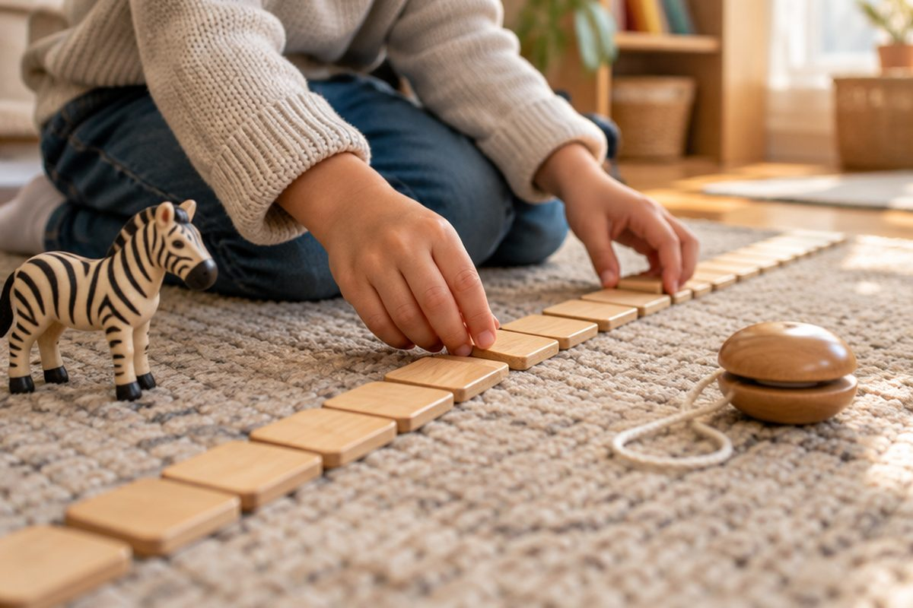

전체 단원 › 1학년 › 영어 › 1단계 · 알파벳 N~Z
N부터 Z까지, 알파벳 끝까지 가 볼까?

지난번에 A부터 M까지 배웠어요. 오늘은 나머지 13개를 만나요.
알파벳 뒷부분이에요
M 다음은 N이에요.
N부터 Z까지 13개예요.
Z가 맨 마지막 글자예요.
N O P Q R S T U V W X Y Z
N부터 T까지 이름을 불러요
R은 '알'이라고 불러요.
pig는 P로 시작해요.
sun은 S로 시작해요.
N 엔 · O 오 · P 피 · Q 큐 · R 알 · S 에스 · T 티
U부터 Z까지 이름을 불러요
W는 '더블유'예요. 이름이 길어요.
zebra는 Z로 시작해요.
X는 fox 끝에 있어요.
U 유 · V 브이 · W 더블유 · X 엑스 · Y 와이 · Z 지
A부터 Z까지 이어 불러요
알파벳 노래를 끝까지 불러요.
LMNOP는 빨리 지나가요.
천천히 한 글자씩 짚어요.
Q R S, T U V, W X, Y and Z
핵심 낱말
- 알파벳
- 영어를 쓰는 글자 26개
- 마지막 글자
- 알파벳 맨 끝 글자 Z
- 알파벳 노래
- 26개 글자를 차례대로 부르는 노래
꼭 알아야 할 표현
| N | 엔 | 👃 nose 의 첫 글자 |
| O | 오 | 🐙 octopus 의 첫 글자 |
| P | 피 | 🐷 pig 의 첫 글자 |
| Q | 큐 | 👸 queen 의 첫 글자 |
| R | 알 | 🐰 rabbit 의 첫 글자 |
| S | 에스 | ☀️ sun 의 첫 글자 |
| T | 티 | 🐯 tiger 의 첫 글자 |
| U | 유 | ☂️ umbrella 의 첫 글자 |
| V | 브이 | 🎻 violin 의 첫 글자 |
| W | 더블유 | ⌚ watch 의 첫 글자 |
| X | 엑스 | 🦊 fox 의 끝 글자 |
| Y, Z | 와이, 지 | 🪀 yo-yo, 🦓 zebra 의 첫 글자. Z '지'는 G '지'와 달리 벌 소리 '즈'처럼 시작해요 |
한 줄 정리
- N부터 Z까지 13개 글자를 배웠어요.
- R은 '알', W는 '더블유'라고 불러요.
- Z가 알파벳 맨 마지막 글자예요.
학교 교육과정 연결 (미리 배우기)
- [4영01-01] 알파벳과 쉽고 간단한 단어의 소리를 듣고 식별한다.